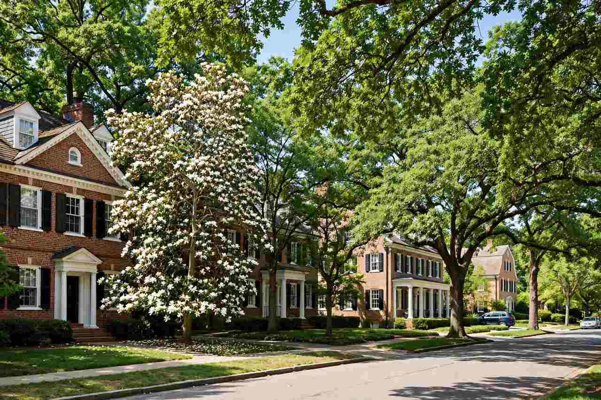

Rodent Control · Penhook, VA
Trusted Rodent Control in Penhook, VA
If rodents have moved into your Penhook home or business, Murvo can help today. Our local, licensed crews provide same-day inspection, targeted removal, durable exclusion, and cleanup, all under one flat-rate written quote with a written guarantee. No hourly billing and no surprise add-ons, just rodent specialists serving Penhook and communities throughout Franklin County every day of the week. From North Shore, Westlake Corner, Henry Fork to every corner of Franklin County, 1 ZIP codes are covered by local Murvo crews.
24/7Availability
1ZIP codes covered
Same-dayResponse
Licensed · Upfront options · Written guarantees · Fully insured
Penhook at a glance
Local Rodent Control for Penhook, VA.
Franklin County
Countysouthern Virginia
RegionRoanoke · 27 mi
Nearest metro127 miles west of Richmond
From Richmond1
ZIP codes covered Service by service in Penhook
Rodent Control Services Available in Penhook
The full range of residential and commercial rodent services in Penhook and Franklin County - built around the species and housing here, from emergency removal and same-day control to exclusion, proofing, trapping, cleanup, and damage repair. Every service below is quoted flat-rate in writing and backed by our workmanship guarantee.
- 01Rodent Control↗
- 02Rodent Inspection↗
- 03Rodent Removal↗
- 04Rodent Exclusion↗
- 05Rodent Proofing↗
- 06Rat Control↗
- 07Mice Control↗
- 08Mouse Removal↗
- 09Rat Removal↗
- 10Rodent Trapping↗
- 11Rodent Baiting↗
- 12Rodenticide Application↗
- 13Attic Rodent Removal↗
- 14Crawl Space Rodent Removal↗
- 15Wall Rodent Removal↗
- 16Kitchen Rodent Control↗
- 17Garage Rodent Control↗
- 18Commercial Rodent Control↗
- 19Residential Rodent Control↗
- 20Emergency Rodent Removal↗
- 21Same-Day Rodent Control↗
- 22Rodent Damage Repair↗
- 23Rodent Waste Cleanup↗
- 24Rodent Disinfection↗
- 25Rodent Odor Removal↗
- 26Dead Rodent Removal↗
- 27Rodent Dropping Cleanup↗
- 28Rodent Exclusion for Roofs↗
- 29Rodent Exclusion for Vents↗
- 30Rodent Exclusion for Chimneys↗
Rodent Control in Penhook
Rodent Control in Penhook
Most Penhook calls start with a sound nobody can place, then droppings confirm what the noise suggested. Murvo treats rodent control as a sequence, not a single visit: find the species, clear what is inside, close what let it in. Before any work begins, you approve a flat-rate written quote.
Homeowners in Penhook call Murvo for rodent control because the problem here is specific: Norway rat (Rattus norvegicus) pressure around historic rowhomes, brick twins, older apartments, and wooded suburban single-family homes, tight access at alley-facing doors and garages, basement foundations, sewer laterals, and gaps around utility lines, and activity that follows the local season. Our Franklin County crews diagnose the real source before recommending work, explain the options in plain language, and quote one flat rate in writing. Across Penhook - including Union Hall, North Shore - every visit is backed by licensed, insured technicians and our written workmanship guarantee. In Penhook, rodent control calls most often involve historic rowhomes, brick twins, older apartments, and wooded suburban single-family homes, where alley-facing doors and garages, basement foundations, sewer laterals, and gaps around utility lines decide whether the fix holds.
The pattern in Franklin County is predictable, so the response should be methodical. First comes identification, because Norway rat (Rattus norvegicus) and House mouse (Mus musculus) nest and feed in different places. Traps then go where travel is proven, not where it is convenient, and catches are logged by location. Sealing follows only after activity drops, using materials matched to each opening. Finally, monitoring stays in place long enough to catch a late survivor or a new arrival, and those readings decide when the program closes. That discipline is what turns a busy first week into a genuinely quiet second month for the household.
Getting started takes one conversation, day or night, because our lines stay open 24/7. Work proceeds only after your approval, in stages you can follow, and a final walkthrough reviews every seal and every monitoring result before sign-off. We book a window that suits your household, confirm access needs in advance, and arrive prepared. Questions after sign-off are welcome at any hour, and the same written record helps any technician pick up your case immediately.
Need help quickly in Penhook? Call any time — the emergency line is staffed 24/7, and same-day rodent control appointments are available in most areas. We inspect first, explain the plan in plain language, and put the flat rate in writing before work starts. A Penhook inspection confirms it on site - dropping size, gnaw marks, and entry points tell the story quickly.
Murvo does not quote rodent control sight unseen, because species, activity, and sealing needs change the work involved. After inspection you get one flat-rate written quote, and that is the figure you pay. As national context only, Angi's 2026 figures put rat and mouse removal and control at an average of $396, with a typical range of $189 to $655 — a benchmark, not a Murvo price.
Rodent Inspection in Penhook
Rodent Inspection in Penhook
What should you expect to hold afterwards? Photographs, a species identification, a map of entry points, and priorities you can act on in stages. That is a Murvo rodent inspection in Penhook: licensed and insured, unhurried, and honest about separating urgent problems from minor weaknesses that can safely wait.
Homeowners in Penhook call Murvo for rodent inspection because the problem here is specific: Norway rat (Rattus norvegicus) pressure around historic rowhomes, brick twins, older apartments, and wooded suburban single-family homes, tight access at alley-facing doors and garages, basement foundations, sewer laterals, and gaps around utility lines, and activity that follows the local season. Our Franklin County crews diagnose the real source before recommending work, explain the options in plain language, and quote one flat rate in writing. Across Penhook - including Union Hall, North Shore - every visit is backed by licensed, insured technicians and our written workmanship guarantee. Around North Shore, Westlake Corner, Henry Fork, the pattern is similar: House mouse (Mus musculus) finds alley-facing doors and garages, basement foundations, sewer laterals, and gaps around utility lines first, and lasting rodent inspection has to close those routes.
We listen first: when you hear noises, and where, often points straight to the most active nesting areas. The visit ends with a written report covering species, entry points, contamination, and the removal and exclusion steps we recommend, each with a flat-rate price. Technicians then trace active runways, identify whether droppings belong to Norway rat (Rattus norvegicus) or House mouse (Mus musculus), and check insulation and wiring for damage. That detail stops you paying for treatment aimed at the wrong species or the wrong part of the building.
Booking a rodent inspection in Penhook takes one call, and same-day appointments are often available. Your technician arrives on time, walks the property with you, and inspects the attic, crawl space, and exterior in one visit. Findings are explained with photos before you receive a flat-rate written quote for any recommended work. Nothing proceeds without your approval, and urgent items are clearly flagged. You keep the full written report either way.
Inspections are the fastest way we help in Penhook: same-day appointments are available in most areas, and urgent calls are answered 24/7. A typical rodent inspection takes under an hour for most homes, and you leave the visit with photos, written findings, and a flat-rate quote for any work we recommend, so decisions never wait on us. A Penhook inspection confirms it on site - dropping size, gnaw marks, and entry points tell the story quickly.
Nationally, a professional rodent inspection typically runs $100 to $200 according to Angi's 2026 data, and it is often credited toward the job if you proceed. Murvo confirms your exact rodent inspection price before the visit and quotes any follow-up work as a flat rate in writing after inspection, so the figure you approve is the figure you pay, with no hourly billing.
Rodent Removal in Penhook
Rodent Removal in Penhook
A removal visit should solve a health concern, not create one. Murvo technicians wear protective equipment, bag and remove contaminated material safely, and keep children and pets away from working areas. We explain each stage in plain language, confirm when rooms are safe to use again, and back the finished job with a written workmanship guarantee.
When you need rodent removal in Penhook, the job starts with what is actually happening in your part of Franklin County. Murvo crews work Penhook every week, so they know how Norway rat (Rattus norvegicus) and House mouse (Mus musculus) behave around historic rowhomes, brick twins, older apartments, and wooded suburban single-family homes here - and where they get in: alley-facing doors and garages, basement foundations, sewer laterals, and gaps around utility lines. We arrive equipped for the full job, confirm the flat rate in writing before work begins, and cover the whole Penhook area, including Union Hall, North Shore. No call-center runaround and no open-ended hourly billing - just a local crew, a clear plan, and a written quote you approve first. The Penhook crews who handle rodent removal also handle the follow-through - proofing, cleanup, and monitoring - so one visit can close the whole problem.
We favor trap-based, no-poison removal first where practical, which is safer around children and pets and avoids animals dying in hidden voids. Traps are matched to the species and setting, placed where droppings and rub marks show real travel routes, then cleared and reset until numbers reach zero. Dead animals in inaccessible places are located and retrieved before odor develops, contaminated nesting material is removed, and sealing recommendations are prioritized so the route indoors closes permanently. Monitoring then confirms the home stays clear.
Once you book rodent removal in Penhook, we agree a time window and your technician arrives with traps, protective equipment, and a clear plan. Progress is photographed and shared with you throughout the program. The first visit confirms activity and sets traps; return visits clear and reset them on schedule. When catches reach zero, we walk through the results, discuss sealing, and confirm your written guarantee before closing the job. Nothing is left unexplained.
When rodents are active indoors in Penhook, waiting rarely helps. Rodent removal can usually start the same day you call, our line answers 24/7 for a rodent loose in a living area, and the first visit sets traps straight away. Scheduled returns then clear and reset them until monitoring shows the home is clear. If you are seeing signs now, an inspection this week is the fastest way to know which situation you are in.
Cost depends on the species, how many animals are active, and how much sealing the home needs afterwards, so Murvo inspects first and quotes one flat rate in writing. For national context only, Angi's 2026 data averages rat and mouse removal at $396, typically $189 to $655. That benchmark is not a Murvo price; your written quote is the exact figure.
Rodent Exclusion in Penhook
Rodent Exclusion in Penhook
What makes sealing permanent rather than cosmetic? Material rodents cannot chew, fitted so weather cannot lift it. Murvo uses copper mesh, hardware cloth, and metal flashing where each belongs, installed by licensed and insured crews. Every finished seal is photographed, walked through with you, and covered by a written workmanship guarantee.
When you need rodent exclusion in Penhook, the job starts with what is actually happening in your part of Franklin County. Murvo crews work Penhook every week, so they know how Norway rat (Rattus norvegicus) and House mouse (Mus musculus) behave around historic rowhomes, brick twins, older apartments, and wooded suburban single-family homes here - and where they get in: alley-facing doors and garages, basement foundations, sewer laterals, and gaps around utility lines. We arrive equipped for the full job, confirm the flat rate in writing before work begins, and cover the whole Penhook area, including Union Hall, North Shore. No call-center runaround and no open-ended hourly billing - just a local crew, a clear plan, and a written quote you approve first. Coverage for rodent exclusion spans 1 ZIP codes in Franklin County, including 24137.
Start with a hard rule: nothing gets sealed while animals remain inside. Each opening receives its own treatment, from packed copper mesh in irregular gaps to hardware cloth across vents and flashing at roof junctions. Door sweeps close the obvious routes, and smaller cracks receive durable sealant chosen for exterior exposure. Technicians confirm the home is clear through trapping and monitoring, then survey the structure junction by junction, because seams between materials open as buildings settle. A written inventory ties each photograph to a location, so future checks can revisit precisely the same points.
Before sealing day, confirm pets are secured and access to the roofline and foundation is clear. The crew then works through the agreed list, checks that no animals remain inside, and fits each seal cleanly. Afterwards you receive the photographs, the guarantee, and a date for the follow-up check that confirms everything is holding as intended. If monitoring ever finds fresh activity at a sealed point, that written inventory tells us exactly what to inspect first.
Rodent exclusion in Penhook usually starts with a survey visit we can often schedule the same day you call. Sealing itself is booked as soon as any active animals are cleared, because nothing is sealed inside. Most homes are fully sealed within days, not weeks, and urgent entry points near wiring or food areas are prioritized first. In Franklin County, activity follows the local season, so timing the work matters as much as the method.
After the survey of your Penhook home, every opening that needs sealing is listed and priced as one flat-rate written quote, so you pay only for the work your property needs. For national context, Angi's 2026 data puts basic exclusion at $200 to $600 depending on access and the number of openings; that benchmark is not a Murvo price.
Rodent Proofing in Penhook
Rodent Proofing in Penhook
When is the right season for rodent proofing in Penhook? Before cold weather sends rodents searching for indoor warmth, though any quiet month works well. Our licensed, insured technicians harden the structure, advise on food storage and vegetation, and leave a seasonal re-check booked, all backed by a written workmanship guarantee.
Homeowners in Penhook call Murvo for rodent proofing because the problem here is specific: Norway rat (Rattus norvegicus) pressure around historic rowhomes, brick twins, older apartments, and wooded suburban single-family homes, tight access at alley-facing doors and garages, basement foundations, sewer laterals, and gaps around utility lines, and activity that follows the local season. Our Franklin County crews diagnose the real source before recommending work, explain the options in plain language, and quote one flat rate in writing. Across Penhook - including Union Hall, North Shore - every visit is backed by licensed, insured technicians and our written workmanship guarantee. The Penhook crews who handle rodent proofing also handle the follow-through - proofing, cleanup, and monitoring - so one visit can close the whole problem.
Proofing starts with a whole-property assessment inside and out, from overhanging branches and cluttered garages to unsealed vents and gaps under doors. We also address attractants: securing pet food and bird seed storage, trimming vegetation away from walls, and clearing harborage. Every item is prioritized so essential work happens first. The plan typically combines structural sealing of utility entries and foundation cracks with mesh screening on vents, chimneys, and rooflines, plus door sweeps where light shows underneath. Photos show each weakness we find.
After booking, we confirm your appointment and any access needs, such as gates or attic hatches. Later re-checks verify sweeps, screens, and seals are still holding. On the day, your background-checked technician completes the survey and agreed proofing work in one visit where possible. Before leaving, you walk the finished sealing together, receive care and storage advice, and confirm the guarantee. Nothing is added to your bill without approval first.
Proofing is planned work rather than an emergency, but you can still move fast: rodent proofing surveys in Penhook are often available the same day and always within a few days. Once you approve the plan, most work is finished in a single visit, ideally before colder weather drives rodents indoors. If you are seeing signs now, an inspection this week is the fastest way to know which situation you are in.
For national context, Angi's 2026 data puts exclusion, the core of proofing, at $200 to $600 for basic work. That figure is a benchmark, not a Murvo price. After surveying your Penhook property, we separate quick homeowner wins from specialist sealing and quote the professional work as one flat rate in writing, so you can stage spending sensibly.
Rat Control in Penhook
Rat Control in Penhook
Rat problems escalate quietly across Franklin County: gnawed wiring, contaminated insulation, and droppings spreading through storage areas before anyone sees an animal. Murvo answers with same-day appointments where available and a 24/7 line for urgent cases. Every visit is documented, trapped rats are removed hygienically, and the program finishes with exclusion so the next group cannot simply move in.
Homeowners in Penhook call Murvo for rat control because the problem here is specific: Norway rat (Rattus norvegicus) pressure around historic rowhomes, brick twins, older apartments, and wooded suburban single-family homes, tight access at alley-facing doors and garages, basement foundations, sewer laterals, and gaps around utility lines, and activity that follows the local season. Our Franklin County crews diagnose the real source before recommending work, explain the options in plain language, and quote one flat rate in writing. Across Penhook - including Union Hall, North Shore - every visit is backed by licensed, insured technicians and our written workmanship guarantee. Coverage for rat control spans 1 ZIP codes in Franklin County, including 24137.
We prioritize trapping and exclusion within an integrated program and offer no-poison options where suitable. Droppings areas are cleaned safely, never dry-swept, because disturbing dry droppings can spread contamination; surfaces are disinfected first, following CDC guidance. Monitoring devices then confirm the routes have gone quiet before we close the program. Where a site genuinely needs bait, it is placed only in tamper-resistant, locked stations positioned away from pets and food areas, and monitored on schedule. Every station is labeled, mapped, and recorded.
After booking, we confirm access to attics, basements, and outbuildings so the first visit is productive. On arrival, your background-checked technician walks the property with you, sets out the plan, and starts pre-baiting straight away once you approve the quote. Follow-up visits are booked ahead, trapped rats are removed promptly, and a final monitoring check verifies the result before sign-off under our written workmanship guarantee. You see documented progress at each visit.
Rats do not wait, and neither do we: rat control in Penhook can usually start with a same-day inspection, and urgent calls are answered 24/7. Pre-baiting begins on the first visit once you approve the written quote, traps are set as soon as rats are feeding confidently, and scheduled checks keep the program moving until activity stops. Murvo's Penhook crews explain the finding either way, and the flat-rate quote leaves the decision with you.
Species, colony size, and the number of entry points to seal all affect rat work, which is why Murvo inspects first and quotes one flat rate in writing. Angi's 2026 figures, given for national context only, average rat control and removal at $396 and typically run $189 to $655; the written quote for your Penhook home is the exact price.
Mice Control in Penhook
Mice Control in Penhook
Most Penhook mouse problems announce themselves in the kitchen first: droppings in a drawer, a chewed corner on stored food, movement behind the kickboard. Murvo surveys those hotspots, clusters traps where mice actually travel, seals gaps, and covers the program with one flat-rate written quote approved in advance.
Homeowners in Penhook call Murvo for mice control because the problem here is specific: Norway rat (Rattus norvegicus) pressure around historic rowhomes, brick twins, older apartments, and wooded suburban single-family homes, tight access at alley-facing doors and garages, basement foundations, sewer laterals, and gaps around utility lines, and activity that follows the local season. Our Franklin County crews diagnose the real source before recommending work, explain the options in plain language, and quote one flat rate in writing. Across Penhook - including Union Hall, North Shore - every visit is backed by licensed, insured technicians and our written workmanship guarantee. The Penhook crews who handle mice control also handle the follow-through - proofing, cleanup, and monitoring - so one visit can close the whole problem.
The program starts with an activity and entry-point survey covering kitchens, attics, wall voids, and under-floor spaces. We then seal pencil-width gaps, including the overlooked routes behind baseboards and where pipes and wires pass through floors, and advise on cleaning scent-marked surfaces. Traps are placed in clusters along baseboards, behind appliances, and in attic voids, because mice travel the same short routes nightly. Technicians return to clear and reset traps and track numbers until they reach zero. Follow-up monitoring confirms the result before sign-off.
Book with one call and tell us which rooms show signs; same-day surveys are often possible. Check visits are scheduled immediately, and each one reports catches plainly until the final confirmation visit shows activity has stopped. Your technician inspects kitchen, attic, and voids, explains the route map, and quotes in writing before traps are set. The final confirmation matters, because mice can go quiet briefly while a nest remains, and monitoring distinguishes quiet from genuinely finished.
Mice programs move quickly in Penhook: a mice control survey can often be arranged the same day you call, and traps are set on that first visit once you approve the quote. Because mice investigate new objects fast, catches usually begin quickly, and scheduled check visits follow until a final confirmation shows activity has fully stopped. Murvo's Penhook crews explain the finding either way, and the flat-rate quote leaves the decision with you.
Mouse work is priced by the number of rooms affected and the amount of sealing involved, so Murvo surveys first and quotes one flat rate in writing. For national context only, Angi's 2026 data averages rat and mouse control and removal at $396, typically $189 to $655. That is not a Murvo price; your written quote is exact.
Mouse Removal in Penhook
Mouse Removal in Penhook
You found droppings in a cabinet or heard scratching in the attic of your Penhook home, and you want the mice out, not managed indefinitely. Murvo's mouse removal locates nests and feeding areas room by room, runs a multi-trap program until catches reach zero, and seals access points behind it. One flat-rate written quote is agreed before work begins.
When you need mouse removal in Penhook, the job starts with what is actually happening in your part of Franklin County. Murvo crews work Penhook every week, so they know how Norway rat (Rattus norvegicus) and House mouse (Mus musculus) behave around historic rowhomes, brick twins, older apartments, and wooded suburban single-family homes here - and where they get in: alley-facing doors and garages, basement foundations, sewer laterals, and gaps around utility lines. We arrive equipped for the full job, confirm the flat rate in writing before work begins, and cover the whole Penhook area, including Union Hall, North Shore. No call-center runaround and no open-ended hourly billing - just a local crew, a clear plan, and a written quote you approve first. Coverage for mouse removal spans 1 ZIP codes in Franklin County, including 24137.
We favor trap-based, no-poison removal, which is safer around children and pets and avoids mice dying in hidden voids. Cleanup follows CDC guidance: droppings and nesting debris are never dry-swept, because that can spread contamination; surfaces are disinfected first, then waste is removed hygienically. We also advise on safe cleaning of cabinets and storage areas afterwards, so your kitchen feels properly yours again once the program is complete and monitoring confirms zero activity. Sealing then closes the route permanently. That finish is guaranteed in writing.
For urgent mouse problems in Penhook, contact Murvo for a same-day response where available. Your technician surveys the home, explains the multi-trap plan, and confirms a flat-rate written quote before starting. Return visits are scheduled to clear and reset traps, and cleanup and sealing follow once catches reach zero. The final visit confirms the result and your written workmanship guarantee. You are updated after every visit, without ever chasing us.
In Penhook, mouse removal can often begin the same day you call, especially where mice are active in kitchens or living areas. The first visit surveys nesting sites and sets traps immediately after you approve the quote; because mice investigate traps quickly, catches usually start fast, and return visits continue until numbers reach zero. Around Penhook, historic rowhomes, brick twins, older apartments, and wooded suburban single-family homes give rodents the most cover, which is why entry points get checked before traps are set.
Mouse removal cost reflects the number of rooms involved and how much sealing is needed, which is why Murvo surveys first and quotes a flat rate in writing. For national context only, Angi's 2026 data averages rat and mouse removal at $396, typically $189 to $655. That benchmark is not a Murvo price; your written quote covers your exact program.
Rat Removal in Penhook
Rat Removal in Penhook
A hurried rat removal that misses breeding females or a hidden nest simply restarts the cycle. Murvo's rat removal in Penhook starts with a species and colony-size assessment, uses pre-baited traps on confirmed runways, and removes animals hygienically across repeat visits. A flat-rate written quote is agreed before trapping starts.
Homeowners in Penhook call Murvo for rat removal because the problem here is specific: Norway rat (Rattus norvegicus) pressure around historic rowhomes, brick twins, older apartments, and wooded suburban single-family homes, tight access at alley-facing doors and garages, basement foundations, sewer laterals, and gaps around utility lines, and activity that follows the local season. Our Franklin County crews diagnose the real source before recommending work, explain the options in plain language, and quote one flat rate in writing. Across Penhook - including Union Hall, North Shore - every visit is backed by licensed, insured technicians and our written workmanship guarantee. In Penhook, rat removal calls most often involve historic rowhomes, brick twins, older apartments, and wooded suburban single-family homes, where alley-facing doors and garages, basement foundations, sewer laterals, and gaps around utility lines decide whether the fix holds.
We lead with trapping and exclusion in an integrated, pet-conscious approach, using locked bait stations only where genuinely justified and monitored on schedule. After clearance, contaminated insulation areas can be sanitized, and droppings are never dry-swept: following CDC guidance, surfaces are disinfected first before waste is removed. Monitoring devices and a final walkthrough then provide documented evidence that activity has ended, and ongoing proofing keeps drains, vents, and rooflines checked afterwards. That evidence is always shared with you in writing.
Book and we will agree a visit time, with same-day appointments for active infestations where available. Repeat visits are scheduled in advance, progress is reported after each one, and sealing follows once catches stop and monitoring stays clear. Your technician assesses the colony, explains each stage, and confirms the written quote before pre-baiting begins. Every visit is documented with counts and locations, so the final clearance rests on a complete record rather than a single quiet check.
In Penhook, rat removal can usually start the same day you call, with 24/7 answering for rats active in living areas. Pre-baiting begins on the first visit after you approve the written quote, and traps are set once rats feed confidently, typically within days. Repeat visits then run frequently until monitoring confirms the colony is gone. In Franklin County, most cases involve the Norway rat (Rattus norvegicus) and the House mouse (Mus musculus), so the inspection focuses on their routes first.
Rat removal pricing depends on colony size, access, and the sealing needed afterwards, so Murvo assesses your property first and quotes a flat rate in writing. For national context only, Angi's 2026 data averages rat removal at $396, typically $189 to $655. That is a benchmark, not a Murvo price, and your written quote covers the full program described.
Rodent Trapping in Penhook
Rodent Trapping in Penhook
Good trapping is species craft, not guesswork. In Penhook, wary Norway rat (Rattus norvegicus) need unset traps pre-baited for several days before they will feed confidently, while House mouse (Mus musculus) respond to clustered traps at activity hotspots. Our technicians match trap types and baits to the species and setting, from food lures in kitchens to robust devices for larger rats in basements.
When you need rodent trapping in Penhook, the job starts with what is actually happening in your part of Franklin County. Murvo crews work Penhook every week, so they know how Norway rat (Rattus norvegicus) and House mouse (Mus musculus) behave around historic rowhomes, brick twins, older apartments, and wooded suburban single-family homes here - and where they get in: alley-facing doors and garages, basement foundations, sewer laterals, and gaps around utility lines. We arrive equipped for the full job, confirm the flat rate in writing before work begins, and cover the whole Penhook area, including Union Hall, North Shore. No call-center runaround and no open-ended hourly billing - just a local crew, a clear plan, and a written quote you approve first. Seasonal timing matters for rodent trapping in Penhook: rodents surge in Penhook from October through March.
Adjustment is where experience shows. Households receive a simple map of device locations and safety guidance for children and pets. As numbers fall toward zero, attention shifts to exclusion recommendations and cleanup, converting a trapping program into lasting protection. If catches cluster at one end of a runway, placements concentrate there; if a route goes quiet while another warms up, devices move accordingly. Baits are refreshed and matched to what the species is already eating nearby. Households can follow that adjustment process through the shared catch log, which records every change of position.
Call to book, and a first visit can often happen the same day. That visit maps activity, places or pre-baits devices, and produces your written quote for the full program including checks. Nothing proceeds without approval. Scheduled returns then clear, reset, and record catches, sharing the running total with you at every single visit. Catch records are never an afterthought; they are the evidence that decides when trapping ends and monitoring alone takes over.
In Penhook, a rodent trapping program can usually start the same day you call, with traps placed or pre-baiting begun on the first visit after you approve the quote. Mice often investigate within the first night, while wary rats need a few days of pre-baiting before traps are set. Scheduled checks then keep the program moving until numbers reach zero. A Penhook inspection confirms it on site - dropping size, gnaw marks, and entry points tell the story quickly.
Trapping is usually quoted as part of a complete removal program rather than by the trap, and the price depends on species, activity level, and how many check visits are needed. Murvo inspects first and quotes one flat rate in writing covering the program and its check visits, so there are no per-visit surprises and no hourly billing at any stage.
Rodent Baiting in Penhook
Rodent Baiting in Penhook
What rules govern bait near children, pets, and wildlife in Virginia? Strict ones, and Murvo follows them plainly. State rules restrict anticoagulant rodenticides, and Murvo applies the same care everywhere: no loose bait, no open trays, no unmonitored stations. Before placement, you review locations, risks, and alternatives with a licensed technician.
When you need rodent baiting in Penhook, the job starts with what is actually happening in your part of Franklin County. Murvo crews work Penhook every week, so they know how Norway rat (Rattus norvegicus) and House mouse (Mus musculus) behave around historic rowhomes, brick twins, older apartments, and wooded suburban single-family homes here - and where they get in: alley-facing doors and garages, basement foundations, sewer laterals, and gaps around utility lines. We arrive equipped for the full job, confirm the flat rate in writing before work begins, and cover the whole Penhook area, including Union Hall, North Shore. No call-center runaround and no open-ended hourly billing - just a local crew, a clear plan, and a written quote you approve first. Seasonal timing matters for rodent baiting in Penhook: rodents surge in Penhook from October through March.
Where baiting is not appropriate indoors, we say so, and recommend trapping first followed by proofing of gaps around pipes, vents, and doors. Consumption records from each visit show whether activity is falling, holding, or moving, guiding whether stations stay, move, or come out entirely in favor of sealing and trapping alone. That exclusion-first approach reduces reliance on bait over time, which matters for households with children, pets, or visiting wildlife in Penhook. You receive those records after every monitoring visit.
After booking, we confirm a time window and talk through where pets play and children gather, so placement planning starts before we arrive. Follow-up checks are booked ahead, consumption is reported to you, and the program ends with stations removed and sealing recommendations confirmed. On the day, your background-checked technician inspects first, agrees each station location with you, and secures and labels every unit. Nothing is placed anywhere you have not approved.
Deliberate setup matters more than speed with rodent baiting, but the first step is still fast: an inspection in Penhook can often be arranged the same day you call. Stations are placed only after activity is mapped and you approve the written quote and each location, then monitoring runs on a fixed schedule until consumption stops and activity is confirmed clear. Murvo's Penhook crews explain the finding either way, and the flat-rate quote leaves the decision with you.
Baiting cost depends on how many locked stations your property needs and how long monitoring runs, so Murvo inspects and maps activity first, then quotes one flat rate in writing covering placement and scheduled checks. There are no per-visit surprises, and because our approach is exclusion-first, the goal is always to reduce and eventually remove stations, not maintain them forever.
Rodenticide Application in Penhook
Rodenticide Application in Penhook
In historic rowhomes, brick twins, older apartments, and wooded suburban single-family homes, product choice is only half the decision; placement and oversight matter just as much near alley-facing doors and garages, basement foundations, sewer laterals, and gaps around utility lines routes in Franklin County. Licensed Murvo technicians use tamper-resistant locked stations exclusively, map and label every unit, record amounts at each visit, and retrieve accessible carcasses promptly to limit odor and secondary risks.
When you need rodenticide application in Penhook, the job starts with what is actually happening in your part of Franklin County. Murvo crews work Penhook every week, so they know how Norway rat (Rattus norvegicus) and House mouse (Mus musculus) behave around historic rowhomes, brick twins, older apartments, and wooded suburban single-family homes here - and where they get in: alley-facing doors and garages, basement foundations, sewer laterals, and gaps around utility lines. We arrive equipped for the full job, confirm the flat rate in writing before work begins, and cover the whole Penhook area, including Union Hall, North Shore. No call-center runaround and no open-ended hourly billing - just a local crew, a clear plan, and a written quote you approve first. In Penhook, rodenticide application calls most often involve historic rowhomes, brick twins, older apartments, and wooded suburban single-family homes, where alley-facing doors and garages, basement foundations, sewer laterals, and gaps around utility lines decide whether the fix holds.
Application begins with a thorough inspection to confirm species and activity levels and to decide whether rodenticide is needed at all; often, professional trapping plus controlled outdoor baiting is enough, and if trapping alone can solve your problem safely, that is the route we recommend first. When treatment is justified, we follow Inspect, Remove, Exclude, Clean, and Monitor: stations are mapped, labeled, anchored, and checked on schedule, with amounts recorded at every visit. Products stay inside locked stations at all times.
Start with the inspection, often bookable the same day, and expect alternatives explained before products are discussed. Application happens only after approval, with monitoring visits scheduled and a clear stopping point agreed in advance. Your licensed technician confirms whether treatment is justified, reviews safety information with you, and provides the written quote. You can pause or stop the program at any point, and stopping triggers removal of stations rather than leaving them behind unattended.
No responsible rodenticide application starts without an inspection, and in Penhook that inspection can often be scheduled the same day you call. If treatment is justified and you approve the written quote, locked stations are installed on that visit. Monitoring then runs on schedule, and treatment stops as soon as the data shows activity has ended. Murvo's Penhook crews explain the finding either way, and the flat-rate quote leaves the decision with you.
Station numbers, the product permitted under Virginia rules, and the length of monitoring all shape the price. Murvo inspects first, explains whether trapping or exclusion could avoid chemical control entirely, and then quotes one flat rate in writing before work begins. That quote covers scheduled monitoring visits, so there are no per-visit surprises later.
Attic Rodent Removal in Penhook
Attic Rodent Removal in Penhook
In historic rowhomes, brick twins, older apartments, and wooded suburban single-family homes, attics reward rodents generously: warm insulation for nesting, quiet during daylight, and access through alley-facing doors and garages, basement foundations, sewer laterals, and gaps around utility lines that stays invisible from the ground across Franklin County. Our technicians photograph nests, droppings, and gnawed cables, check for young, and examine adjoining crawl spaces so connected activity is not left behind.
When you need attic rodent removal in Penhook, the job starts with what is actually happening in your part of Franklin County. Murvo crews work Penhook every week, so they know how Norway rat (Rattus norvegicus) and House mouse (Mus musculus) behave around historic rowhomes, brick twins, older apartments, and wooded suburban single-family homes here - and where they get in: alley-facing doors and garages, basement foundations, sewer laterals, and gaps around utility lines. We arrive equipped for the full job, confirm the flat rate in writing before work begins, and cover the whole Penhook area, including Union Hall, North Shore. No call-center runaround and no open-ended hourly billing - just a local crew, a clear plan, and a written quote you approve first. Seasonal timing matters for attic rodent removal in Penhook: rodents surge in Penhook from October through March.
Attic work follows Inspect, Remove, Exclude, Clean, and Monitor. Targeted, humane trapping is then set in the attic to clear active animals quickly, with checks on schedule. Once clear, roofline entry points are sealed with metal mesh and flashing as part of wider proofing, and dropping cleanup and disinfection are arranged where insulation is contaminated. A detailed inspection covers the attic, roof, and eaves, identifying species, nests, droppings, and gnawed cables. Monitoring traps stay briefly after sealing to confirm the attic is empty and quiet.
Book attic rodent removal in Penhook and we will arrange an attic visit, same-day where chewed wiring or heavy activity makes it urgent. Your technician inspects the attic and roofline, shows you photographs of the evidence, and confirms a flat-rate written quote before removal begins. Trapping checks follow on schedule, sealing and cleanup complete the job, and monitoring confirms the attic stays clear under guarantee. You approve every stage before it happens.
In Penhook, attic rodent removal visits are often available the same day, and we prioritize attics where chewed wiring creates a fire risk. Trapping starts on the first visit after you approve the written quote, checks run on schedule, and most attics are cleared and sealed within days, with monitoring left briefly to confirm nothing remains inside. The written quote for your Penhook property will spell out exactly which of these applies before any work starts.
Activity levels, roofline sealing, and whether contaminated insulation needs cleanup all affect attic pricing, so Murvo inspects first and quotes one flat rate in writing for the removal program. Cleanup options are priced separately in writing before you decide, so nothing is added once work is underway.
Crawl Space Rodent Removal in Penhook
Crawl Space Rodent Removal in Penhook
Murvo favors trapping and physical exclusion under Penhook homes over poison, an approach that protects pets that may access the crawl space and avoids carcasses hidden where they cannot be reached. Licensed, insured technicians document every sealed opening with photographs, refit access panels securely, and back the finished work with our written workmanship guarantee and monitoring checks.
Homeowners in Penhook call Murvo for crawl space rodent removal because the problem here is specific: Norway rat (Rattus norvegicus) pressure around historic rowhomes, brick twins, older apartments, and wooded suburban single-family homes, tight access at alley-facing doors and garages, basement foundations, sewer laterals, and gaps around utility lines, and activity that follows the local season. Our Franklin County crews diagnose the real source before recommending work, explain the options in plain language, and quote one flat rate in writing. Across Penhook - including Union Hall, North Shore - every visit is backed by licensed, insured technicians and our written workmanship guarantee. Seasonal timing matters for crawl space rodent removal in Penhook: rodents surge in Penhook from October through March.
Cleanup beneath a home follows careful practice throughout. Technicians also trace connections upward through wall voids, checking whether activity reaches the attic, and report moisture issues with practical recommendations. Photographs of every finished seal accompany your guarantee paperwork, creating a record of exactly what was closed. Droppings and nesting debris are never dry-swept, since disturbing them can spread contamination; surfaces are disinfected first, then waste is bagged and removed by technicians wearing protective equipment. Vent and pier sealing is checked from inside the space, not assumed sound from a glance outside.
Schedule an under-home inspection, usually within days and sooner when odors reach living areas. Clearance, vent screening, and cleanup then follow in sequence, with monitoring left in place until the space below is confirmed quiet. Your technician photographs conditions below, explains findings in plain language, and confirms the written quote before any trapping. Photographs from below the home accompany the final paperwork, which is especially useful because few homeowners ever see that space themselves.
In Penhook, crawl space rodent removal inspections can usually be arranged within a few days, and sooner where odors are drifting into living areas or activity sounds heavy. Trapping starts on the first visit after you approve the written quote, and clearance plus sealing follow in sequence, with monitoring left in place until the space below is confirmed quiet. Murvo's Penhook crews explain the finding either way, and the flat-rate quote leaves the decision with you.
Access, the number of vents and gaps to seal, and whether waste cleanup is required all shape crawl-space pricing, so Murvo inspects first and quotes one flat rate in writing. Cleanup options are priced in writing before you decide whether to include them, and there are no surprise charges for extra vents within the agreed scope.
Wall Rodent Removal in Penhook
Wall Rodent Removal in Penhook
Most Penhook wall calls start at night, when scratching behind the drywall makes sleep impossible. Murvo locates the activity by listening, tracing entry routes, and using inspection cameras where access allows, then traps at void access points. A flat-rate written quote comes before any access work is considered.
When you need wall rodent removal in Penhook, the job starts with what is actually happening in your part of Franklin County. Murvo crews work Penhook every week, so they know how Norway rat (Rattus norvegicus) and House mouse (Mus musculus) behave around historic rowhomes, brick twins, older apartments, and wooded suburban single-family homes here - and where they get in: alley-facing doors and garages, basement foundations, sewer laterals, and gaps around utility lines. We arrive equipped for the full job, confirm the flat rate in writing before work begins, and cover the whole Penhook area, including Union Hall, North Shore. No call-center runaround and no open-ended hourly billing - just a local crew, a clear plan, and a written quote you approve first. Around North Shore, Westlake Corner, Henry Fork, the pattern is similar: House mouse (Mus musculus) finds alley-facing doors and garages, basement foundations, sewer laterals, and gaps around utility lines first, and lasting wall rodent removal has to close those routes.
Locating comes before everything else in wall work. Trapping is then placed at those access points to draw rodents out of the void. Checks follow on schedule, and placements shift if monitoring shows activity has moved into a connected void instead. Technicians listen at different points, note when noises occur, trace likely entry routes from roofline, baseboards, and pipe runs, and use cameras in accessible voids to confirm where animals travel and nest. Notes from each listening check are compared over time, turning faint, inconsistent sounds into a reliable activity pattern.
Call and tell us when the noises happen; timing is genuinely useful evidence for locating the void. Your technician traces the activity, explains precisely where the animal travels, and confirms the written quote before trapping or any agreed access work begins. We schedule a locating visit, often the same day for persistent noise. Any agreed access cut is photographed before and after, made good neatly, and recorded so you know exactly what was opened.
In Penhook, wall rodent removal locating visits are often available the same day you call, especially for persistent scratching keeping you awake. Trapping is set at access points on that first visit once you approve the written quote, and because rodents travel the void nightly, results usually follow within days, confirmed by quiet-wall checks before we sign off. In Franklin County, most cases involve the Norway rat (Rattus norvegicus) and the House mouse (Mus musculus), so the inspection focuses on their routes first.
Wall work pricing depends on how precisely activity can be located and whether a minimal access cut is needed, which is why Murvo locates the activity first and quotes a flat rate in writing. That way wall access work never becomes an open-ended bill, and the quote covers the trapping, sealing, and monitoring described in your plan.
Kitchen Rodent Control in Penhook
Kitchen Rodent Control in Penhook
You wipe the counters, yet droppings keep appearing by morning. That pattern points to rodents moving through wall voids and cabinet voids while the house sleeps. Our kitchen rodent control in Penhook tracks those routes, removes the animals away from food surfaces, and seals the openings so the cycle finally stops for good.
Homeowners in Penhook call Murvo for kitchen rodent control because the problem here is specific: Norway rat (Rattus norvegicus) pressure around historic rowhomes, brick twins, older apartments, and wooded suburban single-family homes, tight access at alley-facing doors and garages, basement foundations, sewer laterals, and gaps around utility lines, and activity that follows the local season. Our Franklin County crews diagnose the real source before recommending work, explain the options in plain language, and quote one flat rate in writing. Across Penhook - including Union Hall, North Shore - every visit is backed by licensed, insured technicians and our written workmanship guarantee. Coverage for kitchen rodent control spans 1 ZIP codes in Franklin County, including 24137.
Cupboard hinges, kick plates and pipe collars often reveal more than the room itself. Removal stays targeted and discreet. Afterward, sealing closes the routes we documented, surfaces touched by droppings receive proper cleaning, and we walk through small habits that help: lids sealed, spills wiped from hidden edges, and pet food lifted overnight. We examine those details first, then work outward into adjoining voids and the basement or garage beyond. Monitoring points stay in place until repeat visits show the kitchen has gone quiet.
When you book, we agree an arrival window and any access needs around appliances. The guarantee on the work is provided in writing. On site, inspection comes first, then your written quote and plan. Approved work covers removal, sealing and disinfection, carried out by licensed and insured technicians. Afterwards we monitor, report what we find at each visit, and only close the job when activity has stopped. Your technician explains each visit before leaving the property.
You can reach us by phone 24/7, and reports of droppings close to food preparation surfaces are given priority when we schedule. A same-day visit in Penhook may be possible in many cases, depending on technician availability. When you call, tell us what you found and we will offer the earliest appointment available. The written quote for your Penhook property will spell out exactly which of these applies before any work starts.
Cost depends on how many rodents are active, where they are entering, and how much sealing and cleanup the kitchen needs. Murvo inspects first, then gives one flat-rate written quote covering trapping, sealing and follow-up monitoring, with no hourly billing or add-on surprises. You approve the full price before any work begins, and the quote is backed by our written workmanship guarantee.
Garage Rodent Control in Penhook
Garage Rodent Control in Penhook
Garages give Norway rat (Rattus norvegicus) and House mouse (Mus musculus) shelter, stored food and a quiet route into the house, especially through gaps under the door. Our garage rodent control in Penhook removes rodents, seals door and wall entry points, and protects stored belongings, vehicles and wiring from gnaw damage. That is the standard Murvo works to in Virginia.
In Penhook, garage rodent control is not a generic spray-and-go service. Rodents exploit alley-facing doors and garages, basement foundations, sewer laterals, and gaps around utility lines in historic rowhomes, brick twins, older apartments, and wooded suburban single-family homes, and a fix that ignores those routes does not last. Murvo's Penhook team inspects first, shows you the evidence - droppings, gnaw marks, entry gaps - and then lays out the work with a flat-rate written quote. We serve all of Franklin County from Penhook, including Union Hall, North Shore, and every job is covered by our written workmanship guarantee. Seasonal timing matters for garage rodent control in Penhook: rodents surge in Penhook from October through March.
We start by reading the evidence: droppings along edges, shredded cardboard, grease marks and entry gaps at alley-facing doors and garages, basement foundations, sewer laterals, and gaps around utility lines. Trapping is placed along walls and behind storage where rodents travel, checked and adjusted on follow-up visits. Next comes proofing: door seals, vents and utility penetrations sealed, damaged materials removed, and attractants such as open pet food addressed. Because garages feed activity into the rest of the home, adjoining rooms are checked too, so the problem is solved rather than displaced. Your technician explains each stage as the work progresses.
Share a few details when you book: what you found, where, and whether vehicles need moving. At the visit, the technician walks the garage with you, confirms entry points, and provides the full price in writing before starting. Trapping, nest clearing and sealing then proceed in order. Return visits check monitors and traps, and the job wraps up only when checks show no continuing activity around doors, walls or stored items inside the garage.
We answer calls 24/7 and treat garages with active nesting, chewed wiring or rodents moving into the house as urgent. Same-day appointments in Penhook are often available, depending on technician schedules. Call with a description of the signs you have seen and we will offer you the earliest visit we can. Murvo's Penhook crews explain the finding either way, and the flat-rate quote leaves the decision with you.
As a national benchmark, Angi's 2026 data shows rat extermination ranging from $189-$655, with an average of $396; that is context only, not a Murvo price. Garage work varies with size, activity and the proofing doors and walls require. After inspecting, Murvo quotes one flat rate in writing for trapping, nest removal, sealing and monitoring, for your approval before anything starts.
Commercial Rodent Control in Penhook
Commercial Rodent Control in Penhook
Loading doors rarely close perfectly, and bin stores rarely stay clean for long. Those two facts explain much commercial rodent pressure in Franklin County. Our commercial rodent control in Penhook tackles docks, waste areas, kitchens and storage together, with scheduled monitoring and written reports that show managers exactly what changed between every single visit.
In Penhook, commercial rodent control is not a generic spray-and-go service. Rodents exploit alley-facing doors and garages, basement foundations, sewer laterals, and gaps around utility lines in historic rowhomes, brick twins, older apartments, and wooded suburban single-family homes, and a fix that ignores those routes does not last. Murvo's Penhook team inspects first, shows you the evidence - droppings, gnaw marks, entry gaps - and then lays out the work with a flat-rate written quote. We serve all of Franklin County from Penhook, including Union Hall, North Shore, and every job is covered by our written workmanship guarantee. Coverage for commercial rodent control spans 1 ZIP codes in Franklin County, including 24137.
Programs follow Inspect, Remove, Exclude, Clean and Monitor. Technicians map activity with monitoring points, trap discreetly away from customers, and proof dock doors, vents and pipe penetrations against re-entry. Staff receive simple training pointers so your team spots early droppings or gnawing before a small issue becomes an audit failure. Service is scheduled around trading hours, and urgent sightings during trading are handled with particular discretion to protect your reputation with waiting customers. Each stage is recorded on your written service report.
After you make contact, a surveyor visits at a time that suits trading, inspects the whole site and identifies risks. You receive a written proposal with flat-rate pricing for initial work before anything starts. Approved work begins discreetly, with reports after every visit for your audit file. Monitoring continues on schedule, trends are reviewed with you, and the program adjusts as activity falls. Emergency response is available 24/7 for urgent sightings.
Our commercial lines are open 24/7, and live sightings during trading hours are treated as emergencies and handled discreetly. Response in Penhook depends on technician availability, but we will always offer the earliest visit we can and advise on immediate steps to protect stock, customers and your audit position. Around Penhook, historic rowhomes, brick twins, older apartments, and wooded suburban single-family homes give rodents the most cover, which is why entry points get checked before traps are set.
For wider context, Angi's 2026 figures put rat extermination at $189-$655, averaging $396 nationally, though commercial sites are scoped individually and those figures are not Murvo prices. Site size, sector, activity and the exclusion and monitoring required all shape the cost. Murvo surveys first, then quotes a flat rate in writing for initial work or a clear scheduled-service price for an ongoing program, with reports included for your audit file.
Residential Rodent Control in Penhook
Residential Rodent Control in Penhook
For families in historic rowhomes, brick twins, older apartments, and wooded suburban single-family homes, the worry is understandable: droppings near food, noises at night, children and pets underfoot. Our residential rodent control in Penhook uses careful, pet-conscious methods, explains each step plainly, and keeps loose poison out of indoor areas. Licensed, insured technicians handle the visit from first inspection through final monitoring check.
In Penhook, residential rodent control is not a generic spray-and-go service. Rodents exploit alley-facing doors and garages, basement foundations, sewer laterals, and gaps around utility lines in historic rowhomes, brick twins, older apartments, and wooded suburban single-family homes, and a fix that ignores those routes does not last. Murvo's Penhook team inspects first, shows you the evidence - droppings, gnaw marks, entry gaps - and then lays out the work with a flat-rate written quote. We serve all of Franklin County from Penhook, including Union Hall, North Shore, and every job is covered by our written workmanship guarantee. In Penhook, residential rodent control calls most often involve historic rowhomes, brick twins, older apartments, and wooded suburban single-family homes, where alley-facing doors and garages, basement foundations, sewer laterals, and gaps around utility lines decide whether the fix holds.
Residential work prioritizes exclusion over poison. Safety of occupants and pets guides every method chosen. After inspection and trapping, we proof the building fabric, check vents, doors and pipe penetrations, and monitor with follow-up visits until signs stop. Where droppings or nesting are present, cleanup follows safe disinfection practice. You receive a clear record of what was found, what was sealed and what to watch for, plus a prevention plan covering storage, vegetation and waste around the home. Nothing is left to guesswork at any stage.
One call books your visit. On arrival we inspect first, explain findings in plain language, and quote the full price in writing, with no hourly billing. Trapping, exclusion and disinfection follow, carried out by licensed and insured technicians. Follow-up checks confirm the home is clear and adjust anything still needed. If rodents return within the guarantee terms, we come back, exactly as your written guarantee sets out. Questions are answered honestly throughout, with findings in writing.
We are available 24/7 by phone, and homes with rodents in living areas, kitchens or children's bedrooms are prioritized. Same-day visits in Penhook are often possible, subject to technician availability. Tell us what you have seen or heard, and we will offer the earliest appointment available and advise what to do meanwhile. That is also why Murvo pairs removal with exclusion in Penhook - treating the animal without closing alley-facing doors and garages, basement foundations, sewer laterals, and gaps around utility lines rarely lasts.
Cost depends on the species, how established the infestation is, and how much exclusion and cleanup your home needs. Murvo inspects first, then quotes one flat rate in writing covering removal, sealing, cleaning and monitoring, with no hourly charges or add-on surprises. You approve the price before work begins, and everything is backed by our written workmanship guarantee.
Emergency Rodent Removal in Penhook
Emergency Rodent Removal in Penhook
A rat in the kitchen, scratching inside a bedroom wall or droppings found where children play cannot wait for a routine appointment. Our emergency rodent removal in Penhook is available 24/7, with licensed technicians who remove the animals, secure entry points and make the space safe again.
In Penhook, emergency rodent removal is not a generic spray-and-go service. Rodents exploit alley-facing doors and garages, basement foundations, sewer laterals, and gaps around utility lines in historic rowhomes, brick twins, older apartments, and wooded suburban single-family homes, and a fix that ignores those routes does not last. Murvo's Penhook team inspects first, shows you the evidence - droppings, gnaw marks, entry gaps - and then lays out the work with a flat-rate written quote. We serve all of Franklin County from Penhook, including Union Hall, North Shore, and every job is covered by our written workmanship guarantee. The Penhook crews who handle emergency rodent removal also handle the follow-through - proofing, cleanup, and monitoring - so one visit can close the whole problem.
Calls get sorted by risk before a technician is dispatched: an animal in a bedroom, contamination near food, or damage to wiring moves to the front. Connected voids get checked for droppings, nesting or further movement. On site, the affected area is made safe, then the rodent is located and removed using methods suited to that spot. Openings are secured where possible during the same visit, contaminated surfaces are cleaned, and monitoring is placed so any remaining activity shows up quickly instead of surprising you again later.
Call whenever the problem appears, day or night, and describe where the animal is and who is at home. Removal and securing follow, then cleaning and monitoring. Keep children and pets away from the area until we arrive. The technician assesses the scene, explains the plan, and confirms the price in writing before starting. Later checks confirm nothing else is active, and we review the outcome with you before closing the job as complete.
Our lines are open 24/7, every day, and emergency calls in Penhook are triaged by risk, with live rodents in living areas, food contamination and chewed wiring prioritized. We will offer the earliest visit our technicians can reach and talk you through simple steps to keep everyone safe until we arrive. Murvo's Penhook crews explain the finding either way, and the flat-rate quote leaves the decision with you.
For national context, Angi's 2026 data puts rat extermination at $189-$655, averaging $396, though emergency work is not priced from those figures and they are not Murvo prices. Location, numbers involved and the securing, cleanup or follow-up needed set the scope. On arrival Murvo inspects and quotes one flat rate in writing, with no hourly billing even on urgent jobs, and nothing starts until you approve it.
Same-Day Rodent Control in Penhook
Same-Day Rodent Control in Penhook
Same-day does not mean rushed or half-finished. In Penhook, Murvo's visit covers a proper inspection, targeted trapping and a written plan for exclusion and follow-up, all starting from one call. You receive a flat-rate written quote on the visit before any treatment work begins. It is a complete service, not a quick spray.
Homeowners in Penhook call Murvo for same-day rodent control because the problem here is specific: Norway rat (Rattus norvegicus) pressure around historic rowhomes, brick twins, older apartments, and wooded suburban single-family homes, tight access at alley-facing doors and garages, basement foundations, sewer laterals, and gaps around utility lines, and activity that follows the local season. Our Franklin County crews diagnose the real source before recommending work, explain the options in plain language, and quote one flat rate in writing. Across Penhook - including Union Hall, North Shore - every visit is backed by licensed, insured technicians and our written workmanship guarantee. In Penhook, same-day rodent control calls most often involve historic rowhomes, brick twins, older apartments, and wooded suburban single-family homes, where alley-facing doors and garages, basement foundations, sewer laterals, and gaps around utility lines decide whether the fix holds.
Technicians combine immediate action with lasting proofing. Follow-up work completes exclusion, disinfects contaminated areas and verifies results through monitoring. This staged approach means same-day speed where it matters, without skipping the sealing and checking that make results permanent for Penhook homes and businesses. Safety of occupants and pets guides every method chosen. The first visit removes pressure by setting traps and securing the most obvious gaps, while a full inspection maps every route rodents use around the building. Nothing is left to guesswork at any stage.
Before the visit, leave droppings where they are and keep pets out of the affected rooms; the evidence helps us work faster. With approval, removal begins immediately and sealing is planned or completed depending on scope. We check back on the dates agreed, report each result honestly, and adjust the plan if fresh signs appear. On arrival, assessment comes first, followed by your written quote. The job closes only when monitoring supports that activity has ended.
Call as early in the day as you can and we will offer the earliest same-day appointment our Penhook technicians can reach, subject to availability. Our lines are open 24/7. If today is fully booked, we will offer the next available visit and advise on simple precautions to take meanwhile. Around Penhook, historic rowhomes, brick twins, older apartments, and wooded suburban single-family homes give rodents the most cover, which is why entry points get checked before traps are set.
Same-day work is priced the same fair way as any Murvo job: inspection first, then one flat-rate written quote based on species, activity levels and the exclusion and cleanup needed. There is no hourly billing and no premium surprise for speed. You approve the full price before treatment begins, and the work is backed by our written workmanship guarantee.
Rodent Damage Repair in Penhook
Rodent Damage Repair in Penhook
Some damage hides where you cannot see it. Wiring gnawed inside a wall void or pipework scored in the crawl space can matter more than marks on a door frame. In Penhook, we assess room by room, flag safety concerns early, and repair the damage alongside exclusion so the same destruction is not repeated.
In Penhook, rodent damage repair is not a generic spray-and-go service. Rodents exploit alley-facing doors and garages, basement foundations, sewer laterals, and gaps around utility lines in historic rowhomes, brick twins, older apartments, and wooded suburban single-family homes, and a fix that ignores those routes does not last. Murvo's Penhook team inspects first, shows you the evidence - droppings, gnaw marks, entry gaps - and then lays out the work with a flat-rate written quote. We serve all of Franklin County from Penhook, including Union Hall, North Shore, and every job is covered by our written workmanship guarantee. Homes near North Shore tend to show activity first in Penhook, which is why inspections start with alley-facing doors and garages, basement foundations, sewer laterals, and gaps around utility lines.
Assessment starts once removal and exclusion are complete or scheduled, because repairing over an active infestation wastes money. We inspect attics, walls, garages and service areas for gnawed wiring, damaged pipes, shredded or urine-soaked insulation, chewed timber and holed vents or screens. Contaminated material is removed safely, following disinfection-first practice where droppings are present. Repairs then restore insulation, seal holes with gnaw-resistant materials, and replace damaged components, with electrical or plumbing risks flagged for licensed trades where needed. Nothing is left to guesswork at any stage.
Tell us where the damage looks worst when you book, whether that is the attic, a ceiling stain or wiring you are worried about. The technician assesses each area, photographs the findings, and quotes the agreed repair scope in writing. With approval, contaminated material is removed safely, repairs and replacement insulation follow, and openings are proofed as part of the same work. We review every finished area with you and note any trade checks we still recommend afterwards.
Damage repair is scheduled once removal and exclusion are under way, so repairs are not undone by active rodents. We are available 24/7 by phone, and urgent safety issues in Penhook, such as chewed wiring, are prioritized for assessment. Call and describe the damage, and we will arrange the earliest suitable visit. A Penhook inspection confirms it on site - dropping size, gnaw marks, and entry points tell the story quickly.
Repair costs depend on how much material is damaged, whether insulation needs replacing, and how many entry points require repair and proofing. Murvo assesses first and quotes one flat rate in writing for the agreed scope, with no hourly billing. You see exactly what is included before approving, and the completed repairs are backed by our written workmanship guarantee.
Rodent Waste Cleanup in Penhook
Rodent Waste Cleanup in Penhook
Please leave that crawl space alone until we arrive. Disturbing dried droppings the wrong way can put harmful particles into the air you breathe. In Penhook, we ventilate the area first, soak deposits with disinfectant, and only then begin removal. The space is disinfected again afterward, so it is genuinely safe to use again.
When you need rodent waste cleanup in Penhook, the job starts with what is actually happening in your part of Franklin County. Murvo crews work Penhook every week, so they know how Norway rat (Rattus norvegicus) and House mouse (Mus musculus) behave around historic rowhomes, brick twins, older apartments, and wooded suburban single-family homes here - and where they get in: alley-facing doors and garages, basement foundations, sewer laterals, and gaps around utility lines. We arrive equipped for the full job, confirm the flat rate in writing before work begins, and cover the whole Penhook area, including Union Hall, North Shore. No call-center runaround and no open-ended hourly billing - just a local crew, a clear plan, and a written quote you approve first. In Penhook, rodent waste cleanup calls most often involve historic rowhomes, brick twins, older apartments, and wooded suburban single-family homes, where alley-facing doors and garages, basement foundations, sewer laterals, and gaps around utility lines decide whether the fix holds.
Order matters with contaminated material, and CDC guidance sets that order. Next, droppings, nesting and soiled insulation are soaked with disinfectant and left to sit for the required time. Technicians in gloves, respirators and protective clothing then remove everything by hand; nothing is ever dry-swept or vacuumed, since that can aerosolize harmful particles. Bagged waste leaves sealed. First, the space is ventilated with nobody else inside. Finally, hard surfaces are washed and disinfected again, and we confirm when the area can be entered safely.
After booking, we agree access and keep people and pets out of affected areas. Your technician assesses the contamination and quotes one flat rate in writing before starting. Approved cleanup follows CDC practice: ventilation, disinfectant soaking, PPE throughout, sealed removal and final disinfection. We confirm when spaces can be used again and review the results with you. The work is backed by our written workmanship guarantee. We leave the area tidy when the work finishes.
Calls are answered 24/7, and heavy contamination in living areas — especially where children or pets are present — is prioritized when we book. The earliest visit we can offer in Penhook depends on technician schedules. In the meantime, keep people and pets out of the area, ventilate if you can do so safely, and never dry-sweep or vacuum droppings. If you are seeing signs now, an inspection this week is the fastest way to know which situation you are in.
For national context, Angi's 2026 figures put rat extermination typically at $189-$655, averaging $396, though cleanup itself scales with how much contaminated material must be removed. Those are national figures, not Murvo prices. Murvo assesses the volume and location first, then quotes one flat rate in writing, so you approve the full cleanup cost before work begins.
Rodent Disinfection in Penhook
Rodent Disinfection in Penhook
Removing rodents is only half the job. Droppings, urine and body oils leave bacteria, potential viruses and scent trails that attract new rodents to the same routes. Our rodent disinfection in Penhook sanitises nesting sites, travel routes and contaminated areas in attics, crawl spaces and kitchens.
In Penhook, rodent disinfection is not a generic spray-and-go service. Rodents exploit alley-facing doors and garages, basement foundations, sewer laterals, and gaps around utility lines in historic rowhomes, brick twins, older apartments, and wooded suburban single-family homes, and a fix that ignores those routes does not last. Murvo's Penhook team inspects first, shows you the evidence - droppings, gnaw marks, entry gaps - and then lays out the work with a flat-rate written quote. We serve all of Franklin County from Penhook, including Union Hall, North Shore, and every job is covered by our written workmanship guarantee. Around North Shore, Westlake Corner, Henry Fork, the pattern is similar: House mouse (Mus musculus) finds alley-facing doors and garages, basement foundations, sewer laterals, and gaps around utility lines first, and lasting rodent disinfection has to close those routes.
Because disinfectant works best on cleared surfaces, this service usually follows waste removal in the same program. Ventilation runs before and after application. We prepare each area, apply product evenly to beams, boards and hard surfaces rodents crossed, and respect the contact time on the label instead of rushing. Scent-marked routes receive particular attention, since neutralizing them discourages repeat traffic along old runways. You receive straightforward aftercare notes covering drying times, pet access and any follow-up treatment linked to your wider removal and sealing plan.
One call adds disinfection to your existing removal program, or arranges it on its own after a past infestation. On arrival, we review the inspection findings together and agree exactly which surfaces will be treated. The written price is confirmed before application begins. Technicians then work methodically through each zone, ventilate, apply, wait and check. At the end you get clear guidance on when children and pets can return to each space, plus a summary of what was treated and why.
Disinfection is usually scheduled straight after removal and cleanup, so contaminated areas are treated promptly. We are available 24/7 by phone, and Penhook appointments depend on technician availability. Call once rodents have been found or removed, and we will arrange the earliest suitable treatment visit and explain any precautions meanwhile. If you are seeing signs now, an inspection this week is the fastest way to know which situation you are in.
For national context, Angi's 2026 data puts rat extermination typically at $189-$655, averaging $396; disinfection is normally a modest part of a full remediation program, not a Murvo price list. Murvo quotes disinfection as a flat rate in writing, scaled to the number and size of areas treated, never sold as a vague add-on. You approve the price before treatment begins.
Rodent Odor Removal in Penhook
Rodent Odor Removal in Penhook
Rodent odor soaks into insulation, timber and soft materials, and scent trails keep attracting new rodents. Murvo's rodent odor removal in Penhook combines source removal, disinfection and targeted odor treatment in attics, wall voids and crawl spaces. Every job starts with a flat-rate written quote. It is a complete service, not a quick spray.
Homeowners in Penhook call Murvo for rodent odor removal because the problem here is specific: Norway rat (Rattus norvegicus) pressure around historic rowhomes, brick twins, older apartments, and wooded suburban single-family homes, tight access at alley-facing doors and garages, basement foundations, sewer laterals, and gaps around utility lines, and activity that follows the local season. Our Franklin County crews diagnose the real source before recommending work, explain the options in plain language, and quote one flat rate in writing. Across Penhook - including Union Hall, North Shore - every visit is backed by licensed, insured technicians and our written workmanship guarantee. Around North Shore, Westlake Corner, Henry Fork, the pattern is similar: House mouse (Mus musculus) finds alley-facing doors and garages, basement foundations, sewer laterals, and gaps around utility lines first, and lasting rodent odor removal has to close those routes.
Odor work starts with source detection, because treating air while contamination remains never lasts. Affected surfaces are then disinfected and treated with odor-neutralising products that break down residue rather than covering it with fragrance. Technicians inspect attics, wall voids, crawl spaces and subfloors, using the smell pattern and inspection evidence to locate urine-soaked insulation, nesting or a dead rodent. The source is removed safely, with disinfectant soaking and full PPE where droppings or carcasses are involved, never dry-swept. Materials are chosen for durability, not the cheapest quick fix.
When you book, tell us where and when the smell is worst, as that helps narrow the search. Source removal, disinfection and treatment follow in sequence, carried out by licensed, insured technicians. We review the finished area with you and record what was found. The completed work is covered by our written workmanship guarantee. Your technician inspects, quotes in writing, and starts only with your approval. The plan is agreed with you before any work begins.
Odor investigations are booked as inspection visits, and we will offer the earliest appointment our Penhook technicians can reach. We answer calls 24/7. Strong smells from a suspected dead rodent in a wall are prioritized where possible. Meanwhile, ventilate affected rooms and avoid disturbing droppings or nesting you may find. In Franklin County, most cases involve the Norway rat (Rattus norvegicus) and the House mouse (Mus musculus), so the inspection focuses on their routes first.
How much odor work costs depends on the source and the materials it has soaked into. For national context, Angi's 2026 figures put rat extermination typically at $189-$655, averaging $396, but those figures are not Murvo prices. Murvo finds the source first — removing it safely with disinfectant soaking and PPE where needed — then quotes one flat rate in writing covering removal, disinfection and treatment for your approval.
Dead Rodent Removal in Penhook
Dead Rodent Removal in Penhook
Finding the exact spot matters: cutting into the wrong wall wastes money and leaves the smell. Murvo technicians in Penhook use the odor pattern, fly activity and inspection access to pinpoint carcasses in wall voids, attics and crawl spaces, then remove and disinfect. Quotes are flat-rate and written.
Homeowners in Penhook call Murvo for dead rodent removal because the problem here is specific: Norway rat (Rattus norvegicus) pressure around historic rowhomes, brick twins, older apartments, and wooded suburban single-family homes, tight access at alley-facing doors and garages, basement foundations, sewer laterals, and gaps around utility lines, and activity that follows the local season. Our Franklin County crews diagnose the real source before recommending work, explain the options in plain language, and quote one flat rate in writing. Across Penhook - including Union Hall, North Shore - every visit is backed by licensed, insured technicians and our written workmanship guarantee. In Penhook, dead rodent removal calls most often involve historic rowhomes, brick twins, older apartments, and wooded suburban single-family homes, where alley-facing doors and garages, basement foundations, sewer laterals, and gaps around utility lines decide whether the fix holds.
Location comes first. Technicians assess the strength and spread of the odor, check fly activity, and inspect attics, crawl spaces and likely wall voids to pinpoint the carcass as precisely as possible before any opening is made. The carcass is then removed wearing gloves and protective equipment, bagged and sealed, and the area disinfected thoroughly, because dead rodents and their droppings can carry bacteria. Where access requires a small opening in a wall, the location is chosen carefully and explained first.
Booking takes one call to our 24/7 line. Removal, disinfection and odor treatment follow, carried out by licensed, insured technicians. Afterwards we advise on ventilation and expected odor fade, and arrange follow-up if signs of live activity were found during the visit. On site, inspection comes first, because accurate location keeps disruption small. You receive the written flat-rate price before anything is opened or removed. Nothing starts until you have approved the written quote.
Dead rodent calls are treated as urgent because odor and fly activity worsen quickly, and our line is open 24/7. In Penhook we will offer the earliest visit our technicians can reach. When you call, tell us where the smell is strongest and when it began, and avoid masking sprays meanwhile, as the natural odor pattern helps us locate the carcass. Around Penhook, historic rowhomes, brick twins, older apartments, and wooded suburban single-family homes give rodents the most cover, which is why entry points get checked before traps are set.
Access makes the biggest difference: an open attic is simpler than a sealed wall void. Published guides citing Fixr put dead rodent removal typically at $150-$250 nationally, depending on access, but that range is not a Murvo price. Murvo locates the carcass first, then quotes one flat rate in writing covering removal and disinfection, which you approve before any work begins.
Rodent Dropping Cleanup in Penhook
Rodent Dropping Cleanup in Penhook
Droppings are evidence as well as a hazard. Their size and shape distinguish mice from rats, and their locations map the travel routes rodents use. Murvo's rodent dropping cleanup in Penhook cleans up in full PPE, disinfects surfaces, and feeds those findings into your removal and sealing plan.
When you need rodent dropping cleanup in Penhook, the job starts with what is actually happening in your part of Franklin County. Murvo crews work Penhook every week, so they know how Norway rat (Rattus norvegicus) and House mouse (Mus musculus) behave around historic rowhomes, brick twins, older apartments, and wooded suburban single-family homes here - and where they get in: alley-facing doors and garages, basement foundations, sewer laterals, and gaps around utility lines. We arrive equipped for the full job, confirm the flat rate in writing before work begins, and cover the whole Penhook area, including Union Hall, North Shore. No call-center runaround and no open-ended hourly billing - just a local crew, a clear plan, and a written quote you approve first. Homes near North Shore tend to show activity first in Penhook, which is why inspections start with alley-facing doors and garages, basement foundations, sewer laterals, and gaps around utility lines.
Every cleanup follows CDC safe practice. Nothing is ever dry-swept or vacuumed while untreated, at any stage. The area is ventilated first, then every deposit is soaked with disinfectant and left for the full dwell time before anything is touched. Only then is material removed by technicians wearing gloves and respirators, bagged and sealed. After removal, surfaces are washed and given a full disinfection treatment, because droppings are usually accompanied by urine trails invisible to the eye. Materials are chosen for durability, not the cheapest quick fix.
One call books a safe assessment. Follow-up ties into monitoring, so any fresh droppings are spotted quickly and acted on. We close the job when surfaces are clean and sanitised and the wider rodent plan is in place. On arrival we inspect without disturbing dry deposits, explain the process and confirm the written price. Technicians then ventilate, soak, remove and disinfect, working room by room. Questions are answered honestly throughout, with findings in writing.
Our line is answered 24/7, and we will offer the earliest Penhook appointment our technicians can reach, prioritizing droppings found in kitchens and living areas. Until we arrive, keep children and pets away from deposits and ventilate the room if you can do so safely. Do not sweep, brush or vacuum anything dry, as that can disturb contaminated particles. In Franklin County, activity follows the local season, so timing the work matters as much as the method.
For national context, Angi's 2026 data puts rat extermination typically at $189-$655, averaging $396; dropping cleanup is normally a smaller, clearly itemised part of overall work, and those figures are not Murvo prices. Murvo assesses how many rooms are affected and how heavy deposits are, then quotes one flat rate in writing before cleanup begins.
Rodent Exclusion for Roofs in Penhook
Rodent Exclusion for Roofs in Penhook
Look up before you look in the attic. Gaps at the eaves, lifted flashing and vents without covers invite Norway rat (Rattus norvegicus) and House mouse (Mus musculus) straight into the roof space of Penhook homes. Murvo's rodent exclusion for roofs seals those points with materials rodents cannot gnaw through, and a flat-rate written quote is provided after the roofline survey, before work begins.
Homeowners in Penhook call Murvo for rodent exclusion for roofs because the problem here is specific: Norway rat (Rattus norvegicus) pressure around historic rowhomes, brick twins, older apartments, and wooded suburban single-family homes, tight access at alley-facing doors and garages, basement foundations, sewer laterals, and gaps around utility lines, and activity that follows the local season. Our Franklin County crews diagnose the real source before recommending work, explain the options in plain language, and quote one flat rate in writing. Across Penhook - including Union Hall, North Shore - every visit is backed by licensed, insured technicians and our written workmanship guarantee. In Penhook, rodent exclusion for roofs calls most often involve historic rowhomes, brick twins, older apartments, and wooded suburban single-family homes, where alley-facing doors and garages, basement foundations, sewer laterals, and gaps around utility lines decide whether the fix holds.
Inside evidence and outside access must match, so the survey works from both directions: droppings and runways in the attic, then the corresponding gaps along eaves, ridge, flashing and penetrations outside. Each opening then gets the material that fits it: copper mesh packed tightly around pipes and irregular shapes, hardware cloth fixed over larger openings where airflow must continue, and durable sealants finishing joints and flashing edges. Animals are removed or confirmed out before sealing starts. Fixings are secured against wind and persistent gnawing alike.
Book a survey and mention where attic noises or droppings are worst. We review the finished points with you and record them clearly. Your technician inspects inside and out, photographs each entry point, and quotes the full sealing scope in writing. Once removal is complete or confirmed, proofing proceeds point by point using copper mesh, hardware cloth and sealants matched to each gap. Follow-up monitoring checks the attic stays quiet, and any concerns are discussed with you promptly and honestly.
Roof exclusion starts with a survey visit, and we will offer the earliest appointment our Penhook technicians can reach, with our lines open 24/7. Active attic infestations are prioritized where possible. Meanwhile, note where noises occur, and do not block roof gaps yourself, as rodents could be trapped inside. A Penhook inspection confirms it on site - dropping size, gnaw marks, and entry points tell the story quickly.
Roofline work varies with access, roof size and any damage found, so it is surveyed before it is priced. For national context, published guides put basic exclusion typically at $200-$600, but that range is not a Murvo price. Murvo then quotes one flat rate in writing for the agreed scope — copper mesh, hardware cloth, metal flashing and sealants as each point requires — and you approve the price before work begins.
Rodent Exclusion for Vents in Penhook
Rodent Exclusion for Vents in Penhook
A vent should move air, not animals. Yet torn screens and warped covers turn attic, dryer and crawl space vents into open entryways across Penhook. Murvo's rodent exclusion for vents fits sturdy mesh and metal covers that keep airflow working while rodents stay out, quoted as a flat-rate written quote after every vent has been inspected.
When you need rodent exclusion for vents in Penhook, the job starts with what is actually happening in your part of Franklin County. Murvo crews work Penhook every week, so they know how Norway rat (Rattus norvegicus) and House mouse (Mus musculus) behave around historic rowhomes, brick twins, older apartments, and wooded suburban single-family homes here - and where they get in: alley-facing doors and garages, basement foundations, sewer laterals, and gaps around utility lines. We arrive equipped for the full job, confirm the flat rate in writing before work begins, and cover the whole Penhook area, including Union Hall, North Shore. No call-center runaround and no open-ended hourly billing - just a local crew, a clear plan, and a written quote you approve first. Coverage for rodent exclusion for vents spans 1 ZIP codes in Franklin County, including 24137.
Method matters more than speed here. Technicians measure each vent, shape hardware cloth to the opening, secure it with proper fixings, then use copper mesh for the gaps sheet mesh cannot reach and sealant to weatherproof the perimeter. Dryer ducting gets checked for lint buildup and damage while the cover is fitted, without restricting exhaust flow. A loose staple job lasts weeks; a framed, screwed fitting lasts. Every other entry point nearby is noted too, so vent proofing connects to the wider exclusion picture for your property.
After booking, your technician inspects every vent on the property and notes which are damaged, unscreened or active entry points. The completed exclusion is backed by our written workmanship guarantee. You receive one flat-rate written quote before work starts. Rodents are removed or confirmed out first, then mesh, covers and sealing are fitted vent by vent. We check airflow and fitting on each one with you. We leave the area tidy when the work finishes.
Vent inspections are booked as standard visits, and we will offer the earliest appointment available in Penhook, with phone lines open 24/7. If rodents are actively coming through a vent into living areas, tell us and we will prioritize where we can. Avoid taping vents shut meanwhile, as airflow and trapped animals become problems. The written quote for your Penhook property will spell out exactly which of these applies before any work starts.
For national context, published guides put basic exclusion typically at $200-$600 nationally, depending on how many points need sealing; that is not a Murvo price. Vent work varies with vent numbers, sizes and access. Murvo inspects every vent first, then quotes one flat rate in writing for the agreed proofing. You approve the price before fitting begins, under our written guarantee.
Rodent Exclusion for Chimneys in Penhook
Rodent Exclusion for Chimneys in Penhook
Debris in the firebox and scratching after dark point upward. Chimneys in Penhook, used daily or left cold for years, can harbor animals in the flue and gaps at the crown. We survey the stack first, remove any occupants humanely, then cap and seal so the route closes for good while working fireplaces keep drawing safely.
In Penhook, rodent exclusion for chimneys is not a generic spray-and-go service. Rodents exploit alley-facing doors and garages, basement foundations, sewer laterals, and gaps around utility lines in historic rowhomes, brick twins, older apartments, and wooded suburban single-family homes, and a fix that ignores those routes does not last. Murvo's Penhook team inspects first, shows you the evidence - droppings, gnaw marks, entry gaps - and then lays out the work with a flat-rate written quote. We serve all of Franklin County from Penhook, including Union Hall, North Shore, and every job is covered by our written workmanship guarantee. Around North Shore, Westlake Corner, Henry Fork, the pattern is similar: House mouse (Mus musculus) finds alley-facing doors and garages, basement foundations, sewer laterals, and gaps around utility lines first, and lasting rodent exclusion for chimneys has to close those routes.
The survey covers four things in order: the flue opening and any existing cap, the crown surface, the firebox and damper below, and the flashing where stack meets roof. The cap itself is measured to the flue, built with mesh sides fine enough to exclude rodents yet open enough for safe draft, and fixed securely. Animals inside are removed humanely before anything is fitted; nothing gets capped in. Around it, copper mesh packs irregular gaps at the flashing line, hardware cloth reinforces larger openings nearby, and sealants weatherproof crown cracks and joints.
Tell us when you book whether the fireplace is used, and where noises or debris have shown up. Your technician surveys from firebox to crown, measures the flue, and quotes cap fitting plus sealing in writing before starting. Occupants are removed humanely first, debris is cleared, then the cap is fitted and flashing gaps sealed using copper mesh, hardware cloth and sealants where each fits best. We check the draw together on working fires and review photographs of the finished stack with you.
Chimney surveys are booked as inspection visits, and we will offer the earliest appointment our Penhook technicians can reach, with lines open 24/7. If an animal is trapped or has fallen into the firebox, tell us when you call and we will prioritize where possible. Keep the damper closed and pets away meanwhile. Murvo's Penhook crews explain the finding either way, and the flat-rate quote leaves the decision with you.
Chimney pricing varies with flue size, access and the condition of the crown. Published guides put basic exclusion typically at $200-$600 nationally, for context, but that range is not a Murvo price. Murvo surveys first, then quotes one flat rate in writing covering the properly sized meshed cap, its fitting and flashing sealed with metal flashing and sealants where needed, for your approval before work begins.
Transparent Pricing
Rodent Control pricing in Penhook
Murvo does not publish a one-size price for Penhook, because honest pricing depends on what an inspection finds. After inspecting, we quote one flat rate in writing before any work begins. For national context only, Angi's 2026 data across 9,458 projects puts a rat exterminator at $396 on average, typically $189 to $655, with inspections commonly $100 to $200 and basic exclusion $200 to $600. Those are national figures, not Murvo prices; your written quote is your price.
| Service | Typical Range |
|---|---|
| Rodent Control | $189-$655 |
| Rodent Inspection | $100-$200 |
| Rodent Removal | $189-$655 |
| Rodent Exclusion | $200-$600 |
| Rodent Proofing | $200-$600 |
| Rat Control | $189-$655 |
| Mice Control | $189-$655 |
| Mouse Removal | $189-$655 |
| Rat Removal | $189-$655 |
| Rodent Trapping | $189-$655 |
| Rodent Baiting | $189-$655 |
| Rodenticide Application | $189-$655 |
| Attic Rodent Removal | $189-$655 |
| Crawl Space Rodent Removal | $189-$655 |
| Wall Rodent Removal | $189-$655 |
| Kitchen Rodent Control | $189-$655 |
| Garage Rodent Control | $189-$655 |
| Commercial Rodent Control | $189-$655 |
| Residential Rodent Control | $189-$655 |
| Emergency Rodent Removal | $189-$655 |
| Same-Day Rodent Control | $189-$655 |
| Rodent Damage Repair | $189-$655 |
| Rodent Waste Cleanup | $189-$655 |
| Rodent Disinfection | $189-$655 |
| Rodent Odor Removal | $189-$655 |
| Dead Rodent Removal | $150-$250 |
| Rodent Dropping Cleanup | $189-$655 |
| Rodent Exclusion for Roofs | $200-$600 |
| Rodent Exclusion for Vents | $200-$600 |
| Rodent Exclusion for Chimneys | $200-$600 |
What moves the price in Penhook is scope, not guesswork. A larger infestation takes more trapping, checks, and disposal than a small one, and species matters because rats and mice use different routes and materials. In historic rowhomes, brick twins, older apartments, and wooded suburban single-family homes, the number of entry points needing sealing, access to the attic or crawl space, and the cleanup required after droppings or nesting all affect labor. Rodents surge in Penhook from October through March, when cold weather drives Norway rats and house mice out of alleys, burrows, and river corridors into heated rowhomes and basements. River and waterfront areas can see activity earlier in fall. Seasonal demand can also affect scheduling. Your inspection turns each factor into one written flat-rate price.
Our standard
Why Penhook Residents Trust Us
Local accountability across Franklin County.
Code-Compliant
Work is planned to current building and safety codes, with sealing, screening, and repairs that protect the structure as well as stop rodents.
Same-Day Service
Same-day service is available for active infestations, with local crews dispatched for inspection, removal, and urgent securing of obvious entry points.
Upfront Pricing
Murvo prices by the job, not by the hour. You approve a single written flat-rate quote first, and that price holds.
Licensed & Insured
Fully licensed and insured in Virginia, with background-checked technicians on every job - credentials you can verify before we start.
Penhook problem patterns
Common Rodent Control Problems in Penhook
The issues we fix most for Penhook homeowners, and why they happen here.
Alley and rowhouse rat spread
Why it happens Norway rats travel alleys behind rowhomes in Penhook and move between properties through shared walls, yards, and drains. One unsealed basement or overflowing trash area in Franklin County can keep a whole block active.
Our approach Murvo inspects the alley side as carefully as the interior, traps active rats, and seals basement, door, and drain entry points. We explain what neighbors and landlords need to fix so the block does not re-infest.
Basement mice in older housing
Why it happens House mice use basement pipes, duct runs, and wall voids to reach kitchens in older homes across Penhook. Small gaps around utilities are usually enough, and droppings are often found long before a mouse is seen.
Our approach Murvo traces travel routes from droppings and gnaw marks, places traps along those routes, and seals utility gaps with rodent-resistant materials. The work is flat-rate and backed by our guarantee.
River-corridor burrows moving indoors
Why it happens Rats burrow along riverbanks, harbor edges, and creek corridors in Franklin County, then shift into nearby homes when water rises or temperatures fall. Ground-floor and crawlspace homes closest to the water are usually first.
Our approach Murvo checks burrows, crawlspaces, and foundation vents, removes active rats, and installs exclusion that holds up near water. Follow-up monitoring confirms the burrows stay inactive.
Rodents damaging insulation and wiring
Why it happens Franklin County's humid subtropical climate makes rodents active through more of the year, so they gnaw more on Penhook insulation and wires.
Our approach We fix damage and install barriers to stop future chewing. Every Penhook repair is priced up front.
Early warning signsHave us take a look →
Signs You Need a Rodent Control Pro in Penhook
01Strong musty urine odor in attics, kitchens, or crawl spaces
02Burrows in soil along foundations, sheds, and garden edges
03Chewed or frayed electrical wires in attics and garages
04Shredded paper, fabric, or insulation gathered into hidden nests
05Noises at night suggest rats or mice; daytime suggests squirrels
We know the route
Serving Every Corner of Penhook
We route efficiently across Franklin County.
Downtown Penhook
Core Penhook coverage for apartments, restaurants, and homes near the center, focused on kitchens, basements, alleys, and service corridors.
The Union Hall corridor
Residential Penhook districts with family housing, where Murvo handles attic, wall, and garage infestations plus follow-up monitoring visits.
Greater Franklin County
Surrounding Franklin County communities served by the same local crews, with flat-rate written quotes and guaranteed exclusion wherever you are.
PENHOOK
AREA
MMMMMAREA
Primary Penhook response zone
Penhook service coverage
Penhook Neighborhoods & Areas We Serve
Murvo provides rodent control throughout Penhook and Franklin County, for single-family homes, rentals, and commercial sites. Local crews handle the full chain, from droppings identification and trapping to exclusion, sanitation, damage repair, and follow-up monitoring checks.
24137
Popular neighborhoods
Check my address →
Union Hall · North Shore · Westlake Corner · Henry Fork · Moneta · Rocky Mount · Gretna · Motley
Reviews
What Penhook Customers Say
4.9★★★★★customer reviews
★★★★★
“After the rodenticide application in my Penhook home, I finally have peace of mind. They covered the safety for my kids and pets. Responsible and thorough.”
RB
Rachel B.Penhook
Review★★★★★
“Had a rat issue at my Union Hall rental and they stood behind their work with a written warranty. When I noticed activity again, they returned free and re-treated. That's real service.”
ER
Ethan R.Union Hall
Review★★★★★
“Wanted a rodent inspection before buying a house in Penhook. They checked the whole property and gave me a clear report with a written quote. Extremely thorough and honest.”
SK
Sarah K.Penhook
Review Penhook through the year
Seasonal Rodent Control Tips for Penhook
The humid subtropical climate pattern in Franklin County drives when rodents move, breed, and break in. A season-by-season guide for Penhook homes.
Spring
Mice and young rats disperse in spring as vegetation grows along alleys and fence lines in Penhook. That cover lets them reach foundations without being seen. In Penhook, the earliest signs usually show around North Shore and similar historic rowhomes, brick twins, older apartments, and wooded suburban single-family homes.
Tip Trim vegetation back from the foundation in spring so travel routes and entry holes are easy to spot.
Summer
Summer activity in Penhook centers on alleys, dumpsters, outdoor dining, and gardens, with rats feeding mostly outdoors at night. Mice remain active indoors, especially in apartments and restaurants in Franklin County. In the 24137 ZIP codes, seasonal checks focus on alley-facing doors and garages, basement foundations, sewer laterals, and gaps around utility lines.
Tip Manage trash and outdoor food waste tightly in summer; it decides how large the fall population will be.
Fall
Fall brings the main indoor push in Penhook as nights cool and rats leave alleys and riverbanks for heated basements. Rowhomes in Franklin County with alley garages and old door seals are common entry stories. In Penhook, the earliest signs usually show around North Shore and similar historic rowhomes, brick twins, older apartments, and wooded suburban single-family homes.
Tip Seal alley doors, garage seals, and basement windows in early fall before the first sustained cold.
Winter
Freeze-thaw cycles in Penhook crack mortar and open gaps around pipes, creating new winter entry points. Rats also follow warm sewer laterals toward buildings. In Penhook, the earliest signs usually show around North Shore and similar historic rowhomes, brick twins, older apartments, and wooded suburban single-family homes.
Tip Re-check foundation mortar and pipe gaps mid-winter, especially in older brick homes.
Outside Penhook?
Explore nearby service areas.
01Union Hall↗02Rocky Mount↗03Ferrum↗04Ridgeway↗05Moneta↗06Gretna↗07Chatham↗08Hurt↗09Altavista↗10Narrows↗11Martinsville↗12Stanleytown↗13Bedford↗14Waverly↗
View all Virginia cities →
Learn more
Rodent Safety & Prevention Resources for Penhook, VA
Murvo follows integrated pest management and safe-cleanup guidance from federal health and environmental authorities. These resources explain rodent-borne disease prevention, safe droppings cleanup, and the exclusion methods that keep rodents out for good:
FAQs
Penhook Rodent Control FAQs
A real dispatcher is available if your question is not answered here.
Call (888) 842-2618 →Yes. Murvo runs 24/7 emergency rodent control in Penhook, with same-day appointments kept open for urgent problems - a rat in the kitchen, scratching in the walls at night, or a dead rodent odor. Call (888) 842-2618 any time and a real dispatcher will route the nearest Franklin County crew. Emergency work is quoted flat-rate in writing before we begin, just like scheduled work.
It depends on species, infestation size, how many entry points need sealing, and whether cleanup is required. For national context, Angi's 2026 data puts a rat exterminator at $396 on average, typically $189 to $655. That is national data, not a Murvo price. Murvo inspects your Penhook property first, then quotes one flat rate in writing before any work begins, so the price you approve is the price you pay. A Penhook inspection confirms it on site - dropping size, gnaw marks, and entry points tell the story quickly.
Yes. Murvo Rodent Control is licensed and insured in Virginia, every technician is background-checked, and every Penhook job is backed by a written workmanship guarantee. If rodents return through an entry point we sealed, we come back under the guarantee terms - that is the difference between a treatment and a fix.
We serve Penhook and communities across Franklin County, including Union Hall, North Shore, Westlake Corner, Henry Fork, Moneta, Rocky Mount. Crews cover 1 ZIP codes in the Penhook area, and because the teams are local, routing is based on where you actually live - not a statewide dispatch queue. If you are just outside the listed areas, call (888) 842-2618 and we will confirm coverage for your address.
Responsibility varies by state law, local housing codes, and the lease, so there is no single national answer. In many places landlords must provide habitable housing and address structural entry points, while tenants must keep food and waste conditions that do not attract rodents. Check the Virginia rules and your lease wording carefully. Murvo can inspect a rental in Penhook, document entry points and conditions, and quote the corrective work in writing for whoever authorizes it. In Franklin County, activity follows the local season, so timing the work matters as much as the method.
Very fast, which is why a small problem grows quietly. A female house mouse can produce multiple litters a year, each with several pups, and those pups can breed within weeks. In a Penhook home with food and shelter, a pair and their offspring can become dozens within a year. Early inspection matters: Murvo removes the active population, seals entry points, and monitors afterward so a surviving pair does not restart the cycle. Murvo's Penhook crews explain the finding either way, and the flat-rate quote leaves the decision with you.
An inspection and initial removal visit usually happen on the first appointment, but clearing an established infestation is a process, not a single moment. Trapping and monitoring continue until activity stops, and exclusion is completed once entry points are confirmed. Timelines in Penhook vary with species, access, and infestation size. Murvo sets expectations in writing at the quote stage and keeps monitoring until checks show the property is clear and sealed. A Penhook inspection confirms it on site - dropping size, gnaw marks, and entry points tell the story quickly.
Yes - every Penhook job comes with a written workmanship guarantee. If rodents get back in through an entry point Murvo sealed, we return and re-seal it under the guarantee terms. The guarantee is stated in writing on your quote before work begins, along with the flat rate, so there are no surprises about what is covered or what it costs.

Penhook dispatch is ready
Need Rodent Control in Penhook Today?
Do not let scratching, droppings, or gnawed wiring wait another night in Penhook. Call Murvo at (888) 842-2618 for same-day rodent control, a flat-rate quote in writing, and guaranteed exclusion from local licensed crews.